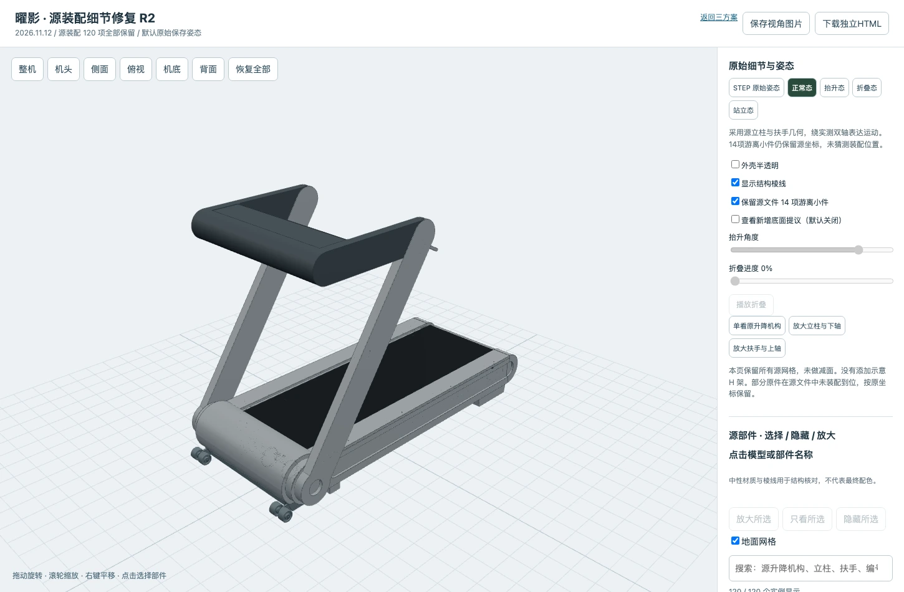
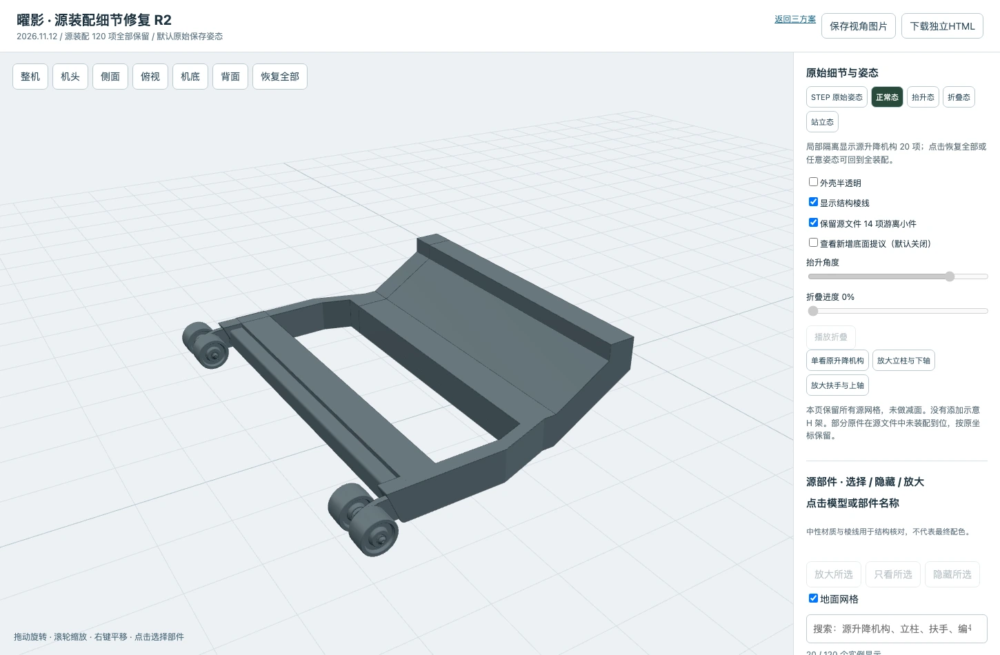

LIJIUJIA / 2026.11.12 / 源细节修复 R2
凌序 · 曜影 · 灵伴
原始资料与细节修复
此前“三款完整交付”的表述已撤回。此前凌序、灵伴为细节不足的概念重建；曜影有 20 项原底部件被隐藏并替换为示意 H 架，另有 14 项游离小件被省略。当前恢复曜影全部源网格；另外两款的精细模型尚未完成。此前粗模型及其衍生家中图不再作为当前成果。
这里保留同事三个方案原图，并分别标明源文件与修复状态。四态、半透明、家中效果和底面美化仍是交付要求；按钮可用不等于模型细节或折叠工程已经通过。
曜影 · 源装配细节恢复
保留源网格 120 个装配实例、9448 个面及 423780 个三角形，网格化遗漏 0 面，未做减面。新增底面美化是独立显示层，默认关闭；没有用示意 H 架替换原机构。14 项游离小件保留源坐标，可自行切换显隐。

源几何展开姿态：全部装配实例保留。
原底部机构 20 项：可单独查看，不再用粗 H 架替代。全屏查看源模型 / 半透明 / 部件放大 ↗
默认显示 STEP 保存姿态。正常、折叠使用实测双轴表达运动；抬升仅为整机刚体姿态，原升降连杆运动尚未解算。竖放稳定性、锁止与干涉未验证。源几何保留不等于机构已完成。
凌序 Linear · 同事原图
此前按图搭建的模型细节不足，已撤回完整交付声明。待定位此方案的专用 STEP 后逐件还原；不拿原厂 8562UAS 或另一款模型替代。
灵伴 Lynmate · 同事原图
此前按图搭建的模型细节不足，已撤回完整交付声明。待定位此方案的专用 STEP 后逐件还原；不拿原厂 8562UAS 或另一款模型替代。